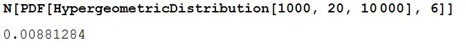

Diskrete fordelinger
Binomisk fordeling
For å benytte seg av binomisk fordeling i Mathematica gjør man:
BinomialDistribution[n, p] hvor "n" er antall forsøk og sansynligheten
p for å oppnå en suksess. Må også bruke funksjonen PDF[Dist, x] for å få
en tall verdi. "Dist" er da BinomialDistribution funksjonen, mens x er
antall ønskede suksesser. Se figur under. Legg også merke til N[.....].
Dette er bare for å få tallet ut som desimal tall og ikke brøk.
Hypergeometrisk fordeling
Hypergeometrisk fordeling er svært likt som binomisk fordeling, men siden
vi trekker og ikke legger tilbake vil oddsen endre seg for vært trekk. I
tilfeller hvor oddsen endre seg svært lite på et trekk. Kan binomisk fordeling
benyttes.
N[PDF[HypergeometricDistribution[n, ns, ntot], n1]
Hvor "n" er antall trekk fra populasjonen. "ns" er antall suksesser i populasjonen.
"ntot" er den totale størrelsen på populasjonen, og den siste variablen "n1" er
antall ønskede suksesser. Se figur under.

Poisson-fordeling
For å regne ut Poisson-fordelingen gjøres dette på samme måte som de andre fordelingene.
N[PDF[PoissonDistribution[u], X]], hvor u er Poisson sannsynlighetsfordelingen, og X er
variablen som du sjekker for. Hvis du får en oppgave P(X (element) {1,2}) må du gjør
to stk. Se bilde under.
Geometrisk-fordeling
For geometrisk-fordeling gjøres dette igjen ganske likt som de andre fordelingene.
N[PDF[GeometricDistribution[p], x]] p er sansynligheten, mens x er antall forsøk.
Hvis man har en oppgave som P(X (element) {1, 2}) da gjøres dette slik:
Negativ Binomisk fordeling
Her også ganske lik som de andre fordelingene.
N[PDF[NegativeBinomialDistribution[p, n], x]], hvor p er sansynligheten, n er antall
parametre og x antall forsøk.
Varians
For alle disse regner vi ut varians helt likt. Variance[NegativeBinomialDistribution[n, p]]
Bare bytter ut funksjonene i midten. Variance[............].